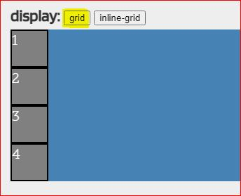
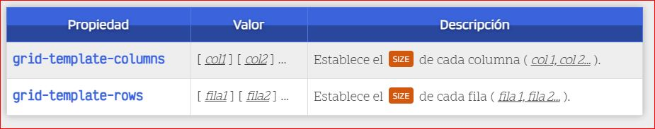
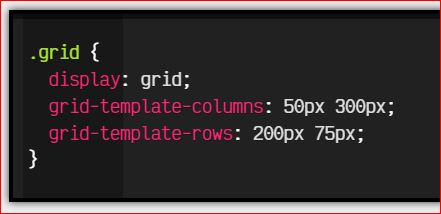
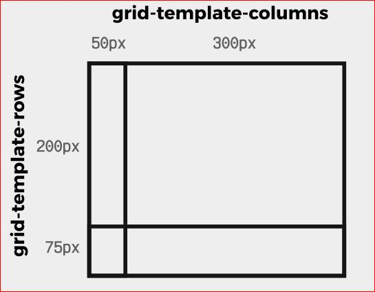

APRENDAMOS HTML5 Y CSS
APRENDAMOS HTML5 Y CSS 
Conceptos CSS-grid
Según Uriel Hernández(2020), Trabajar con una grilla usando el módulo de CSS Grid
implica dos cosas, definir la grilla y posicionar elementos en la grilla.
Definir la grilla significa que vamos a especificar de cuántas columnas y cuántas filas se compondrá
la grilla, además del tamaño que tendrá cada fila y cada columna. En la intersección de la
definición de estas filas y estas columnas se generan espacios en los que podemos posicionar
elementos.
Un par de conceptos muy importantes son los de las líneas y las áreas. Aunque la grilla es virtual,
cada línea límite de cada fila y cada columna tiene un nombre, por defecto un número empezando por
el 1 que indica en qué posición está la línea, sin embargo, puedes especificar los nombres de estas
líneas.
Lo que hace increíble al Grid es el sistema de dos dimensiones, el que nos permite extender
elementos a través de múltiples columnas y filas, esto lo hacemos a través de distintos principios
que conocerás más adelante, entre ellos indicar la línea en la que inicia un elemento y la línea en
la que termine, un indicador de cuántos espacios de la grilla debe usar, etc.
Además, es posible que nosotros definamos áreas dentro de la grilla, es decir, espacios predefinidos
que ocupen 1 o varias filas y columnas, eventualmente, podemos indicarle a un elemento que ocupe
dicha área.
Tanto las líneas como las áreas de la grilla son elementos virtuales que no se ven y por tanto no
afectan el cómo se muestra tu página, sin embargo, estos elementos sirven como referencia para que
podamos colocar elementos dentro de la grilla.
En resumen, la grilla tiene un número definido de filas y un número definido de columnas, al final
de cada una se coloca una línea a la que podemos asignarle un nombre, si juntamos 1 o más filas o
columnas, podemos formar un área, podemos asignar un elemento a dicha área. Las áreas son una
alternativa para definir la posición de un elemento, pero no son la única forma, poco a poco las
iremos conociendo en los siguientes temas, continuemos...
segun J. Román (2017), Para utilizar Grid CSS necesitaremos tener en cuenta una serie de conceptos que utilizaremos a
partir de ahora y que definiremos a continuación:

- Contenedor:El elemento padre contenedor que definirá la cuadrícula o rejilla.
- Ítem:Cada uno de los hijos que contiene la cuadrícula (elemento contenedor).
- Celda (grid cell):Cada uno de los cuadritos (unidad mínima) de la cuadrícula.
- Area (grid area):Región o conjunto de celdas de la cuadrícula.
- Banda (grid track):Banda horizontal o vertical de celdas de la cuadrícula.
- Línea (grid line):Separador horizontal o vertical de las celdas de la cuadrícula
Para utilizar cuadriculas Grid CSS, trabajaremos bajo el siguiente escenario:

Para activar la cuadrícula grid hay que utilizar sobre el elemento contenedor la propiedad display y
especificar uno de los dos valores que queramos utilizar: grid o inline-grid.

Este valor influye en como se comportará la cuadrícula con el contenido exterior. El primero de
ellos permite que la cuadrícula aparezca encima/debajo del contenido exterior (en bloque) y el
segundo de ellos permite que la cuadrícula aparezca a la izquierda/derecha (en línea) del contenido
exterior (ojo, la cuadrícula entera, no cada uno de sus ítems):
| display: grid | display:inline-grid |
|---|---|
|  |  |
Una vez elegido uno de estos dos valores, y establecida la propiedad display al elemento contenedor, hay varias formas de configurar nuestra cuadrícula grid. Al igual que con Flex, muchas de las propiedades se aplican al contenedor padre, sin embargo, existen algunas que se aplican sobre los elementos hijos. Las iremos viendo todas detalladamente.
Definir filas y columnas
filas y columnas fijas
En Grid CSS Grid CSS, la forma principal de definir una cuadrícula es indicar el tamaño de sus filas y sus columnas de forma explícita. Para ello, sólo tenemos que usar las propiedades CSS grid-template-columns y grid-template-rows: 
Conociendo estas dos propiedades, asumamos el siguiente código CSS:

Con la propiedad display: grid definimos que queremos crear un grid, y mediante las propiedades grid-template-columns y grid-template-rows definimos los tamaños de las columnas y las filas del mismo. Esto significa que, a priori, tendríamos una cuadricula o grid de 4 celdas en total:

Referencias
Alvarez Miguel Angel.(2012).Etiquetas Semanticas de HTML5.Desarrolloweb. Recuperado de: https://desarrolloweb.com/articulos/etiquetas-semanticas-html5.html
J. Román. (2017).Lenguaje CSS. Tenerife (Canarias, España):Grid css,cuadriculas. Recuperado de: https://lenguajecss.com/css/maquetacion-y-colocacion/grid-css/